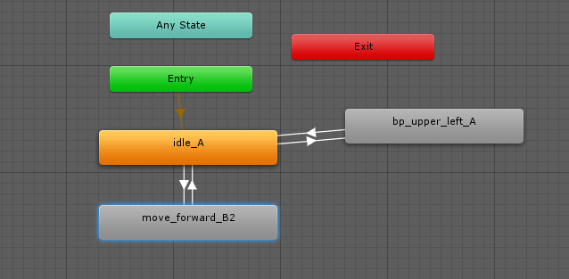
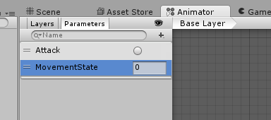
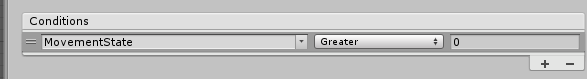
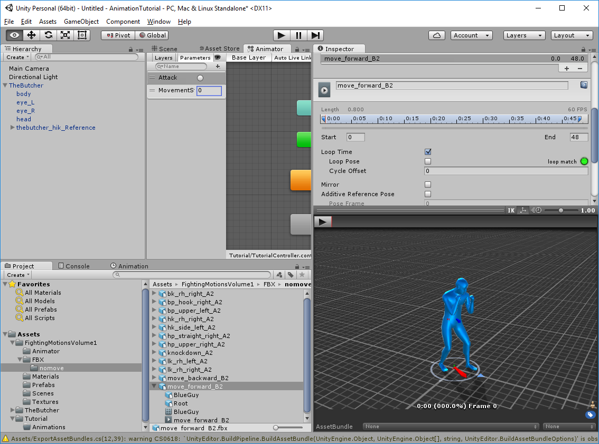
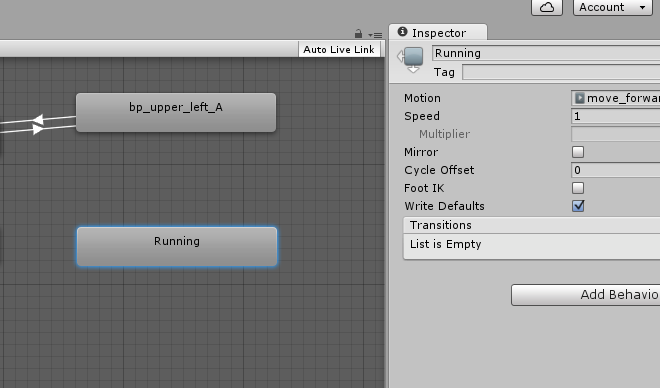
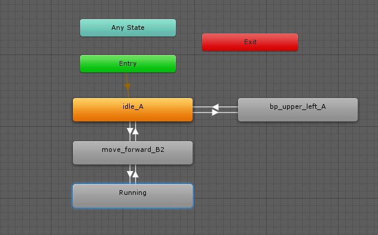

In the previous section, we added an idle and punching animation, and discovered that a Trigger Parameter was the best option to make it fire.
In this section, we will add a walking and running animation, and using a different parameter type.
In the Project view, look under the FightingMotionsVolume1\FBX\nomove folder. We want to use the NoMove animations for this, since we haven't enabled Root Motion yet.
Select move_forward_B2, and drag it into the Animator window. Make a Transition from Idle_A to move_forward_B2, and make another one to return.

If we press the Play button now, we'll go from Entry to idle_A, to move_forward_B2, and back. We haven't set an Transition triggers yet, or a parameter, so it continually flows.
Let's decide what type of Parameter we think we need.
We covered a Bool and Trigger in the previous section: A Bool is either True or False until we decide it's not, and that a Trigger is a one time event.
Firing off a Trigger every time we want to take a step seems excessive. We could set a Bool like "IsMoving". If it's True, the character will continue to move until we tell it not too. This makes sense if the character can just walk, but what if want it to run as well? If an entity is running, it would be IsMoving true as well.
Let's try something else.Select a Parameter Integer, and call it "MovementState".

MovementState will default to 0. By default, our animation should just idle, so from now on, MovementState 0 will be considered an Idle state. Since 0 is not moving, let's say that 1 is moving. Set a Condition on the Transition line from Idle_A to move_forward_B2. But default, it'll show the first Parameter we made, which is Attack. Click on the drop down and select the new Parameter, MovementState.

By default, the MovementState is set to Greater than 0. If the MovementState is greater than 0, the character will start walking.
Press Play button and see what happens. The Butcher Idles peacefully. In the Parameters section, change the MovementState to 1. The Butcher will start to walk, then Idle. The MovementState will stay to the value you entered, 1, until you change it again. Without a condition on the return transition, the Butcher will Idle, walk one step, then idle, etc
Stop the Animation and set a Condition on the return Transition between move_forward_B2 and idle_A. This time, set the Condition to MovementState is Less than 1. This will stop the State from Transitioning back to Idle_A if the MovementState is 1 or higher.
Press Play again, and see how the Idle_A state runs, then see the transition moves to move_forward_B2 fires. However, the walking animation doesn't loop. This is an Animation setting, rather than an Animator.
Through the Project view, go back to the Animation under FightingMotionsVolume1/FBX/nomove, and select the move_forward_B2 animation again. In the Inspector window, click on the Animations tab, and scroll down to "Loop Time". By default, the Loop Time is unchecked for this particular Animation. Click on the check mark to enable it, and click on Apply to save your changes. The Apply button is available in the Inspector window, although you may have to scroll down to see it.

Now re-Play the sequence, triggering the MovementState again by changing 0 to 1. The Butcher will do an awkward shuffle.
Let's continue with the movement state, and add a Running animation. The FightingMotionsVolume1 does not contain an actual running animation, but we can improvise. We'll duplicate the move_forward_B2 State, and increase it's speed.
Right click on the move_forward_B2 state, and select Copy, or click once on the State, and press Ctrl-D to duplicate it. You can also find the original animation, and re-drag it up into the Animator window. This will create a new State, with the same name, but with a number at the end. Click on the new State to bring up the Inspector window, and rename the State to Running.

This Animation is a walking animation, but we can adjust the speed value to make it look like it's animating faster. Adjust the Speed from 1 to 2. The Speed setting on the State does not change the Animation Clip. This allows us to re-use the same animation clip in multiple states, but we can have them running at different speeds.
Create your Transition lines from move_forward_B2 to Running state, and back again.The Transition line from move_forward_B2 should have a new Condition set, where MovementState is Greater than 1. The return Transition should have a Condition that MovementState is Less Than 2.
Re-run the Animation by pressing the Play button, and adjusting the MovementState from 0, to 1, to 2, then 1, and 0 again, and watch the States transition.
Each State needs to finish an Animation sequence before acknowledging the new Transition Condition. However, like we did for the bp_upper_left_A transition, we can select each Transition line, and de-select Has Exit Time. This allows the current State to check its Transition Condition before the end of its Animation, allowing the next state to fire at any time.
Remove the "Has Exit Time" on each of the Transition lines going from Idle to move_forward_B2, to Running, and the ones returning to those states.
This allows each State to have it's Transition interruption by the next State. For example, if we are running (MovementState 2), and suddenly we want to stop (MovementState 0), we don't want the Running animation to continue until it's done. We are stopped, so we want the animation to be interrupted.
If you start with MovementState 0 and change it immediately to 2, you'll see the Transition from Idle to move_forward_B2, then moves unto the Running State. Why? Our Transition from Idle to move_forward_B2 had a condition that MovementState is Greater than 0. As move_forward_B2 starts, it finds that the Transition Condition to Running is satisfied, as the movementState is Greater than 1.
Setting up that type of State Transition allows a more natural flow of the animation. Rather than going from a dead stand still to a full out run, the entity will be idle, take a step or two, then let's it break into a run.
At this point, your Animator should look similar to this:

Created with the Personal Edition of HelpNDoc: Write eBooks for the Kindle